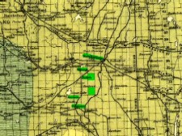
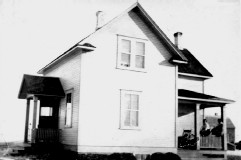

|
Ontario 1885  Norfolk County is a rural city-status single-tier municipality on the north shore of Lake Erie in southwestern Ontario, Canada. Read more... |
|
Ontario 1885 York County is a historic county in Upper Canada, Canada West, and the Canadian province of Ontario. Read more... |
|
Ontario 1885 Haldimand is a rural city-status single-tier municipality (but called a county) on the Niagara Peninsula in southern Ontario, Canada, on the north shore of Lake Erie, and on the Grand River. Read more... |
|
Montrose RM Saskatchewan  Perry Leach and his family homesteaded two quarter sections in Township 32 North of Range 7 West of the Third Prime Meridian. Read more... |
Perry Leach c1915 |
Perry Leach was born March 2, 1864 in Waterford, Norfolk County in Ontario, Canada. His parents were David Leach and Harriett Handy. David Leach was born about 1835 in Ancaster Township in Wentworth County, Ontario. Harriett Handy was born March 14, 1834 in Townsend Township, Norfolk County, Ontario. By early 1852, David Leach had moved to Townsend Township where he met Harriett Handy. They married May 4, 1856 in Townsend Township. Their first son Lewis was born in 1860 in Townsend Township, and died as an infant in 1861. David Leach, Perry’s father, farmed in Townsend Township. The family’s religion was Free Baptist. In January 1866, Perry’s brother Mahlon Leach was born. In November 1869, another brother was born they named David Leach. Perry’s youngest brother David died as an infant in 1870. In November 1870, a daughter was born to David and Harriett. They named her Jane Emma Leach.
Ellen Matilda Wells c1929 |
Ellen Matilda Wells was born March 5, 1866 in Woodhouse Township, Norfolk County, Ontario. Her parents were William Walker Wells and Catherine Stewart. William Walker Wells was born May 22, 1836 in Aurora, King Township, York County, Ontario. Catherine Stewart was born July 5, 1843 in King Township, York County, Ontario. William and Catherine married December 20, 1860, likely at the Baptist Church in Eversley, King Township, York County. By 1862, William and Catherine moved to Woodhouse Township, Norfolk County. Ellen’s older brothers were Stewart Walker Wells, born 1862 in Port Dover and George Edwin Wells born 1864 in Woodhouse Township. Ellen’s younger siblings were William J Wells born in 1869, Mary Maud Wells born in 1870 in Peel County, John Page Wells born 1872 in Toronto, Hannah Jane Wells born in 1876. About 1877, William and Catherine moved to Walpole Township, Haldimand County. Ellen’s younger siblings were Kateleina Eleanor Wells born in 1878, Melinda Wells born in 1880 and Eric Waters Wells born 1882 in Walpole Township. In 1879, Ellen’s family lived in Walpole Township in Haldimand County near the village of Cheapside, Concession I Lot 17, just east of Norfolk County. After 1882, the family had moved back to Woodhouse Township, just south of Townsend Township.
|
|
|


Perry’s father died prematurely on January 2, 1878 of an inflammation of his bowels, which he had for sixteen days. Perry’s mother was now a widow with a relatively young family. She needed help raising her three children, so she married a family friend named Gabriel Orace Culver in about 1880. Gabriel was a blacksmith, so Perry and Mahlon became his apprentices and learned all about blacksmithing.
In 1887, Perry Leach lived in Waterford in Townsend Township when he met Ellen Wells who lived in Woodhouse Township. Perry and Ellen married December 7, 1887 in Port Dover, Norfolk County. Both Perry and Ellen considered themselves Methodists.
On November 6, 1889, Perry’s brother Mahlon married Ellen Skinner in Brantford, Ontario. Both Mahlon and Ellen considered themselves Methodists.
Emma Leach c1900 |
Emma Leach c1906 |
On August 7, 1890, Perry and Ellen’s first child was born in Vittoria, Charlotteville Township, Norfolk County.
By April 1891, Perry Leach and family were living in Mersea Township, Essex County in Ontario. Perry was a blacksmith. The family now identified themselves as Latter Day Saints.
At the same time, Mahlon Leach was living with his mother Harriett Leach and his wife Ellen and his younger sister Emma in Oakland Township, Brant County in Ontario. Mahlon was a farm labourer. The family identified themselves as Baptists.
On June 1, 1892, Perry’s step-father Gabriel Culver died in Townsend Township in Norfolk. He died of Dropsy, an old term for the swelling of soft tissues due to the accumulation of excess water. His death was registered by Charlie Culver of the village of Bloomsbury in Townsend Township on June 23, 1892.
|
|
|
In about 1894, Perry and Ellen Leach moved back to Waterford in Norfolk County. While living there, Perry and Ellen’s daughter Pearl Leach was born January 19, 1895 in Waterford. Two years later, Perry and Ellen’s son Bruce Leach was born January 29, 1897 in Waterford. Perry and Ellen’s son Gordon was born on April 10, 1899, in Waterford.
During the 1890s, the Leach family had a falling out which resulted in Perry losing contact with his brother Mahlon and his sister Emma. It is believed that Perry’s recent conversion to Mormonism was the issue that separated the family.
In 1899, Mahlon and his family immigrated to the United States and moved to the town of Greenfield, County of Milwaukee in Wisconsin. Mahlon’s mother moved back to Townsend Township, Norfolk County.
|
|


Around the turn of the century, Perry and Ellen Leach and their four children moved to the City of Hamilton from Waterford, Ontario to pursue economic improvements. They lived on the outskirts of town north of the downtown area. Perry was not very busy with his blacksmith business, so Perry had to do odd jobs to help make ends meet.
Over the next few years, economic conditions did not improve for the Leach family. On July 7, 1902, their fifth child Zina Leach was born putting more pressure on their financial circumstance. As a result, Perry knew that he had to do something to improve the situation. He had heard about the annual thresher man’s excursions in far away Northwest Territories, and wondered if this would be a possible solution to his problems. He remembered his experience working on his father’s farm before his father’s death, and thought that farm work looked pretty good.
Perry Leach Rabbitfoot Farm 1915 |
Pearl Leach 1912 |
Mahlon and Ellen Leach c1915 |
In the spring of 1905, Perry looked into joining that summer’s thresher man’s excursion. He had learned that there was a lot of excitement about the creation of two new provinces that summer, so he hoped that he would be able to visit one of them. As he made his way to sign up, he wondered what to expect out there. Were there any Latter Day Saints churches or gatherings? After all, he did take his adopted religion serious ly. He was able to make arrangements to join the threshing activity on farms in the central part of the soon to be created province of Saskatchewan later that summer.
|  Perry Leach House at Rabbit Foot Farm c1917 |
In August 1905, Perry began his long trip west on the Canadian Pacific Railway (CPR) through the Canadian Shield and Prairie to Regina, where he transferred to the Qu’Appelle, Long Lake & Saskatchewan Railway (leased by CPR) for the final leg of his trip north to central Saskatchewan, where his summer job awaited him.
Perry Leach, Walter Smith Emma & Lewis Smith c1916 |
Perry was eventually able to get a Sunday off, so he made his way to Saskatoon so he could finally attend church. While at that Latter Day Saints meeting, Perry met Victor Anderson, who had recently become a young widower and who farmed southwest of Saskatoon. Perry told Victor that he liked the area so Victor suggested that he should consider homesteading near Swanson just southeast of where Victor lived. Perry made arrangements for a homestead before returning that fall to his home in Hamilton.
Last Building Standing Perry Leach Homestead |
When Perry told his oldest daughter Jennie that they would be moving to Saskatchewan, she initially refused to move from civilization in Hamilton to the wilderness. After graduating from grade 2 in 1902, Jennie had worked for several years as a nanny in the home of one of Hamilton’s wealthy residents, and wanted to continue this lifestyle. Perry was very persistent that she should move with her family to Saskatchewan. Jennie was very upset about being removed from this job and this family. Before Perry could finalize arrangements for his move west, their sixth child John Perry Leach was born August 17, 1906 in Hamilton.
On February 20, 1906, Perry’s sister Emma married Lewis Laurence Smith in Simcoe, Norfolk County in Ontario. Emma had been a servant in the Smith home since 1901.
Leach Family - Zina, Pearl, Ellen, Perry (standing) Bruce and John Perry (second car) c1916 |
In June 1907, Perry Leach and family arrived in Saskatoon from Hamilton, this time via the new Canadian Northern Railway. They took up residence on their homestead near Swanson, Saskatchewan on June 20, 1907, which Perry had previously obtained on SW ¼ of Section 4 of Township 32 North in Range 7 West of the Third Meridian. That summer Perry and family broke 25 acres and cropped 4 acres. By the end September 1907, Perry and family had built their 16’ by 24’ sod on a frame house. Later, Perry built a log house which became the blacksmith shop after their frame house was built about 1917.
Perry’s experience as a blacksmith back east proved a convenience to both himself and his neighbours. In 1908, Perry and family broke 55 acres and cropped 40 acres. Victor eventually met Perry’s family, and took a liking to Jennie. It didn’t hurt that Jennie was an attractive young lady. On May 30, 1909 Victor married Jennie Leach. In 1909, Perry cropped 75 acres. In 1910, Perry broke an additional 10 acres for a total of 90 acres since he had taken up residence. They also cropped 70 acres that summer.
Carl and Pearl Ward Family c1920 |
 Zina, Jennie & Pearl Leach c1920 |
Perry Leach with neighbours Stephen, George & Ted Bowerman c1920 |
In 1910, Perry had meet the requirements, so he applied for a Patent on his homestead. At that time, Perry had 12 cattle, 4 horses and 9 hogs. He had erected a fence around 55 acres. He also had a sod stable, a granary, a well and a blacksmith shop. The Patent was approved September 23, 1910.
In the summer of 1910, Perry broke 60 acres on his Pre-emption, which he had obtained in 1908. His Pre-emption was adjacent to his homestead at SE ¼ of Section 5 in Township 32 North of Range 7 West of the Third Meridian. In 1911 he broke another 60 acres and cropped 60 acres. In 1912, Perry broke another 160 acres and cropped 160 acres. In 1913, they broke 60 acres and cropped 100 acres. Perry applied for his Pre-emption Patent on November 19, 1913, but it took until January 19, 1915 for his Pre-emption Patent to be issued. By then, Perry had added a barn, a meat house, a log house and an implement building to his property.

Perry’s mother continued to live in Townsend Township, Norfolk County until her death February 21, 1915. Her death occurred at Lot 6 Concession 13 in Townsend Township. She died of Senile Decay and failure of vital organs. Her daughter Emma (Leach) Smith of Simcoe registered her death on February 22, 1915.
Ellen’s father William Walker Wells died May 26, 1915 in Port Dover, Norfolk County. The cause of death was indefinite myocarditis. His death was registered by his daughter Maud (Wells) Gilbert.
Ellen’s mother Catherine (Stewart) Wells died January 18, 1917 in Port Dover, Norfolk County. She was buried at the Port Dover Cemetery. The cause of death was cerebral hemorrhage for three weeks. Her death was registered on January 18, 1917 by her son John Page Wells.
Perry Leach Gravestone Donavon Cemetery 1934 |
Ellen Leach Gravestone Donavon Cemetery 1933 |
Perry and Ellen’s daughter Pearl married to Carl Ward, a local farmer, on December 11, 1917 in the Vanscoy area. Their son Bruce Leach married Elsie Alice Sellers on December 7, 1918. Their son Gordon Leach married Luceal Anilia Shannon on July 5, 1921. Their youngest daughter Zina Leach married Fredrick Cosgrove also on July 5, 1921. Their youngest son John Perry Leach married Pearl Lendall on November 11, 1932.
Perry and Ellen spent their last days living in the town of Delisle, Saskatchewan. Ellen Matilda Leach died April 16, 1933 in Delisle and is buried at the Donovan Cemetery.
Perry Leach died February 16, 1934 in Delisle and was buried at the Donovan Cemetery.